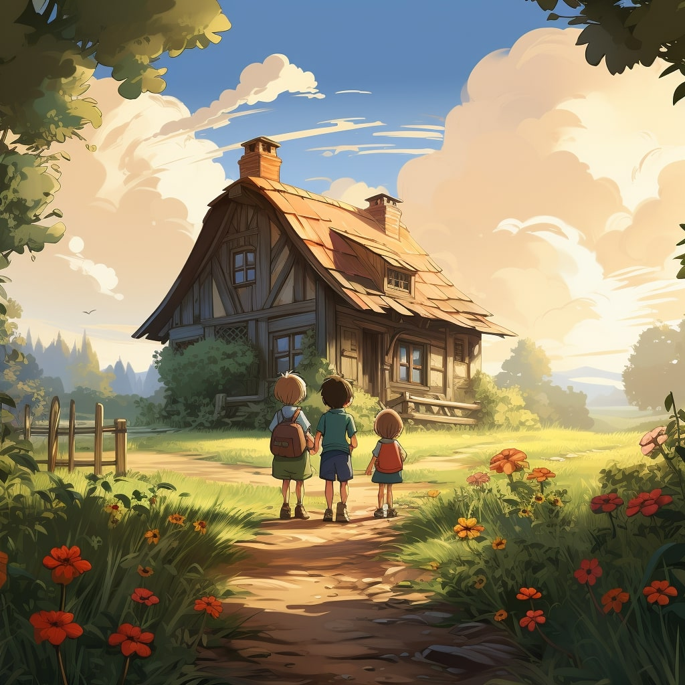

Once upon a time, in a cozy little town, lived two siblings named Sara and Adam. They were super excited because it was finally summer vacation, and they were going to spend it at their grandparents' house in Tunisia.
As soon as they arrived, their grandfather, Baba Ahmed, greeted them with a big smile. He was a wise old man who loved to tell stories and teach his grandchildren new things.


The next morning, Baba Ahmed took Sara and Adam on a special adventure to a vast field filled with tall palm trees. Sara and Adam had never seen palm trees up close before, and they were amazed by their height and beauty.
Baba Ahmed explained that these trees were date palm trees, and they were going to learn all about the delicious fruit they produced. He showed them how the dates grew in big clusters, hanging from the branches like jewels.
As they walked through the palm grove, Sara and Adam noticed baskets filled with freshly collected dates. The dates came in various shapes, sizes, and colors, and the siblings couldn't help but marvel at the diversity.
"Wow, look at all these dates!" Adam exclaimed, pointing to the baskets.
"Yes, indeed," Baba Ahmed replied with a smile, noticing their fascination. "You see, dates come in many different varieties, each with its own unique characteristics."
Sara and Adam looked at each other, their curiosity piqued.
"What kind of varieties are there?" Sara asked eagerly.

Baba Ahmed chuckled softly before reaching into one of the baskets and selecting three different types of dates.
"Right here before you, we have three of the main varieties found in Tunisia," Baba Ahmed said, presenting the dates to Sara and Adam.
"These are Alig dates," he said, pointing to the first batch of small, dark dates. "They're known for their rich flavor and chewy texture."
Next, Baba Ahmed picked up a bunch of larger, golden dates. "These are Kenticha dates," he continued. "They're prized for their sweet taste and soft, juicy flesh."
Finally, Baba Ahmed reached for a cluster of elegant, amber-colored dates. "And these are Deglet el Nour dates," he said, his eyes gleaming with pride. "They're considered the queen of dates, renowned for their exquisite taste and delicate texture."
Sara and Adam gazed at the dates in awe, marveling at the array of colors and shapes before them.
"Each variety has its own special qualities," Baba Ahmed explained. "But no matter which one you choose, all dates are packed with goodness and provide us with important nutrients."
Sara and Adam nodded in understanding, feeling grateful for the opportunity to learn about the different types of dates and the love that went into cultivating them.
"But do you know what's really special about dates?" Baba Ahmed asked, his voice lowering to a conspiratorial whisper.
Sara and Adam shook their heads, curious to find out.
"Well, besides being incredibly tasty, dates are also packed with superpowers!" Baba Ahmed exclaimed.
"Superpowers?" Sara asked, her eyes widening in amazement.
"Yes, indeed!" Baba Ahmed replied with a chuckle. "You see, dates contain something called polyphenols, which are like tiny superheroes fighting to keep us healthy."
Sara and Adam exchanged puzzled looks, so Baba Ahmed decided to explain further.
"Polyphenols are natural compounds found in plants, like dates," he began. "They have a special power called antioxidant activity, which helps our bodies stay strong and fight off harmful things called free radicals."
"Free radicals?" Adam questioned, scratching his head.
"Yes, free radicals are like troublemakers that can cause damage to our cells and make us sick," Baba Ahmed explained. "But polyphenols swoop in like superheroes to neutralize them and keep us healthy."
Sara and Adam's eyes lit up with understanding. "So, dates are like magical fruits that help us stay strong and healthy?" Sara exclaimed.
"Exactly!" Baba Ahmed said, smiling proudly. "And Deglet el Nour dates are like the superheroes of dates because they have the best taste and are packed with these powerful polyphenols."
Sara and Adam nodded in awe, feeling grateful to have learned such an amazing secret about dates.

From that day on, whenever they enjoyed a sweet and juicy date, they would remember Baba Ahmed's magical adventure and the superpowers hidden within each delicious bite. And they would always be thankful for the wisdom and love of their extraordinary grandfather.
You finished the story.
It's time for a Quiz !